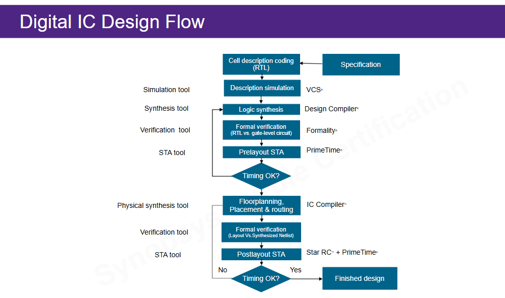
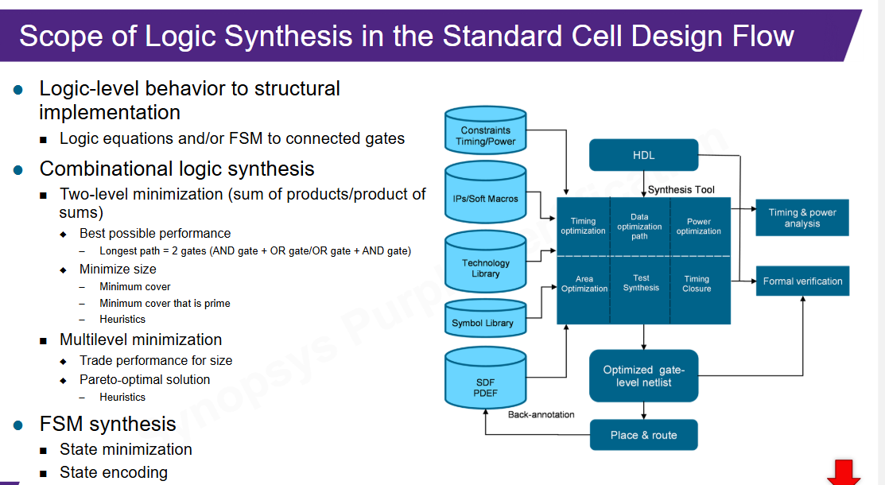
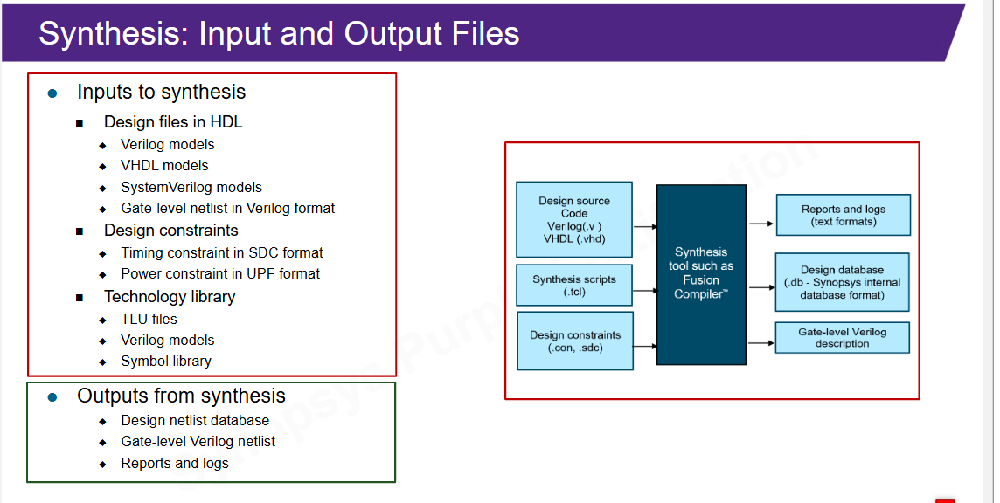
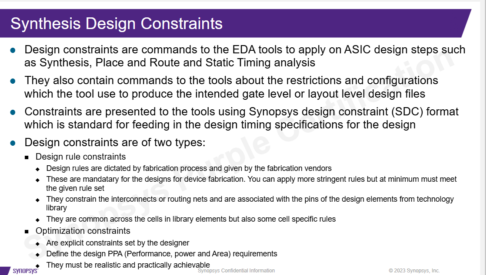

Mudança de pergunta
Até aqui, a pergunta principal era:
Meu RTL simula corretamente?Agora a pergunta vira:
Meu RTL pode virar hardware que atende timing, área e power?
Essa mudança explica por que o ambiente do professor separa make sim e
make synth. Simulação verifica comportamento; síntese tenta construir hardware.
Fluxo de projeto digital
O curso mostra o caminho completo: RTL, simulação, síntese, verificação formal, análise de timing, place and route e checks pós-layout.

| Etapa | Papel | Ferramenta citada |
|---|---|---|
| Simulação RTL | Verificar comportamento | VCS |
| Síntese lógica | Gerar netlist gate-level | Design Compiler |
| Equivalência | Comparar RTL e netlist | Formality |
| STA | Analisar timing | PrimeTime |
| Place and route | Implementar fisicamente | IC Compiler |
Síntese lógica
Síntese lógica transforma descrição HDL em uma implementação estrutural com células de biblioteca. Ela infere registradores, minimiza lógica, sintetiza FSMs, escolhe codificações e otimiza caminhos.

Aprofundamento: o que significa inferir registradores
Quando você escreve um bloco sensível a posedge clk, a ferramenta reconhece o
padrão e escolhe uma célula real de flip-flop na biblioteca. Você descreve a intenção RTL;
a ferramenta escolhe a implementação disponível.
Entradas e saídas da síntese

RTL + constraints + bibliotecas + scripts -> netlist + reportsNo ambiente do professor isso deve aparecer como algo parecido com:
filelist_rtl.f
constraints.sdc
synth.tcl
Makefile
libs/Constraints
Constraints são comandos para ferramentas EDA. Elas dizem quais restrições e metas a ferramenta deve obedecer durante síntese, place and route e análise de timing.

| Tipo | Exemplo | Papel |
|---|---|---|
| Design rule constraints | max transition, max fanout, max capacitance | Limites físicos/eléctricos obrigatórios. |
| Optimization constraints | clock period, area target, power target | Metas definidas pelo designer. |
Três regras de biblioteca
Os slides destacam três design rule constraints que aparecem muito em síntese.
- Max transition: limita o tempo de subida/descida de um sinal.
- Max fanout: limita quantas entradas uma saída consegue dirigir.
- Max capacitance: limita a carga capacitiva que uma saída pode dirigir.
Por que a ferramenta insere buffers?
Se uma rede está lenta, carregada demais ou dirigindo muitas entradas, a ferramenta pode inserir buffers ou trocar células. Isso pode melhorar timing e transição, mas aumenta área e pode aumentar power. É o tradeoff PPA aparecendo na prática.
Tradeoff PPA
PPA significa performance, power e area. O curso reforça que otimizar uma dimensão pode piorar outra.
- Timing agressivo pode exigir células maiores e mais buffers.
- Área menor pode alongar caminhos e piorar timing.
- Power menor pode exigir estratégias como clock gating ou células mais lentas.
Ligação com make synth
Um alvo de síntese costuma esconder esta sequência:
ler ambiente
ler bibliotecas
ler RTL
aplicar constraints
elaborar o top
otimizar
gerar netlist
gerar reportsSe falhar, não olhe só o final do log. A causa pode ser arquivo RTL faltando, top errado, testbench na filelist de síntese, biblioteca ausente, clock não definido ou constraint incorreta.
Checklist para o RTL_LAB2
- Identificar o módulo top sintetizável.
- Separar testbench do RTL.
- Criar ou revisar
filelist_rtl.f. - Garantir que não há
#delay,$display,$finishou dump no RTL. - Definir constraints mínimas de clock.
- Conferir bibliotecas esperadas pelo ambiente.
- Ler warnings e reports, não apenas procurar "completed".
Audio: precisa?
Não parece necessário ouvir o áudio completo. O áudio seria útil se o professor der exemplos
práticos de create_clock, delays de entrada/saída ou leitura de reports no servidor.
Base Markdown: aula didática, cobertura slide a slide.